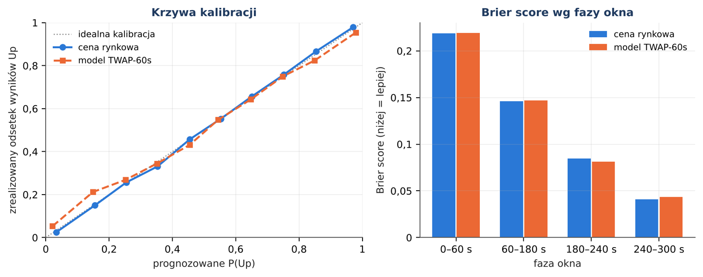

Nieefektywności na 5-minutowych rynkach BTC na Polymarkecie
Rynki predykcyjne
Rynek predykcyjny to giełda kontraktów na wynik przyszłego zdarzenia. Kontrakt wypłaca 1 USD, jeśli zdarzenie nastąpi, i nic, jeśli nie nastąpi. Cenę kontraktu, która mieści się między 0 a 1 USD, można więc czytać jako rynkową ocenę prawdopodobieństwa: kontrakt po 0,62 USD oznacza, że uczestnicy wyceniają szansę zdarzenia na ok. 62%. Jednym z największych takich rynków jest Polymarket. Handel odbywa się tam w księdze zleceń, a uczestnicy mogą zarówno wystawiać zlecenia z limitem ceny, jak i przyjmować oferty innych.
Rynki „Bitcoin Up or Down”
Polymarket prowadzi serię krótkoterminowych rynków na kierunek ceny kryptowalut. Każdy z nich zadaje to samo pytanie: czy cena na koniec okna będzie wyższa niż na jego początku. Rynek ma dwa tokeny, Up i Down, a zwycięski wypłaca 1 USD.
Rynki są tworzone automatycznie w kilku interwałach: 5 minut, 15 minut, 1 godzina, 4 godziny i 1 dzień. Poza BTC obejmują m.in. ETH, SOL, XRP, DOGE, BNB i HYPE (stan na 20.11.2026). Wynik rozstrzyga strumień cen Chainlink. Na 5-minutowym BTC nowy rynek startuje co pięć minut, czyli 288 razy na dobę, a w typowym oknie zawieranych jest od ok. 750 do 2 600 transakcji (mediana ok. 1 400).
Przedmiot badania
Badanie dotyczy wyłącznie 5-minutowych rynków BTC rozliczanych obecną regułą TWAP-60s, obowiązującą od sierpnia 2026. Pytanie jest praktyczne: czy w cenach tych rynków występują nieefektywności, na których da się systematycznie zarabiać po uwzględnieniu opłat, opóźnień i sposobu składania zleceń. Sprawdzono cztery kierunki:
- czy ceny są dobrze skalibrowane względem modelu uczciwego prawdopodobieństwa,
- czy rynek reaguje na ruch BTC z opóźnieniem i jak długo trwa wynikająca z tego przewaga,
- kto na tych rynkach trwale zarabia i jaką strategią,
- czy przewagę lepiej realizować zleceniem z limitem ceny, czy zleceniem natychmiastowym (FOK).
W skrócie
- Ceny są dobrze skalibrowane: Brier score ceny rynkowej wynosi 0,1543, a modelu 0,1546. Jedyne systematyczne odchylenie to niepełna wycena luki na otwarciu (ok. 63%), zbyt mała, by pokryć koszty.
- Model ma przewagę informacyjną nad ceną, ale trwa ona ok. 3 sekundy. Bez infrastruktury o niskich opóźnieniach nie da się jej wykorzystać.
- Trwale zarabia 13 z ok. 35 tys. portfeli. Wszystkie kupują prawie pewnych faworytów po ok. 0,99 USD, co umożliwia kształt opłaty dla takerów.
- Reguła „kup faworyta po najwyżej 0,98 USD, gdy model daje mu co najmniej 99,9%” daje +2,6¢ na akcję jako zlecenie limit (t = 8,4) i +2,0¢ jako FOK. Pojemność tej strategii jest jednak mała.
- Jak dokładnie rozliczane są rynki
- Model uczciwego prawdopodobieństwa
- Czy ceny są skalibrowane
- Pułapka naiwnego backtestu
- Przewaga trwa trzy sekundy
- Kto trwale zarabia
- Zlecenie limit czy FOK
- Czy da się zarabiać: wnioski i ograniczenia
Dane i metoda
Próba obejmuje 2 680 rynków BTC 5-minutowych z okresu 23.10–19.11.2026 (co trzeci rynek, czyli co 15 minut) i wszystkie ich transakcje z Polymarket Data API: 4,2 mln transakcji od ok. 35 tys. portfeli, łącznie 61 mln USD obrotu. Cenę BTC pobrano co sekundę z Binance (BTCUSDT spot). Do testów poza próbą okres podzielono na dwie połowy po 1 340 rynków: wynik uznaje się za wiarygodny tylko wtedy, gdy utrzymuje się w obu.
Zastrzeżenie. Rynki rozlicza strumień Chainlink, do którego badanie nie ma bezpośredniego dostępu. Cenę BTC przybliżono danymi z Binance, więc wartości modelu i rekonstrukcja reguły rozliczenia są przybliżone. Przybliżenie zgadza się z oficjalnymi wynikami w 98,4% rynków, a wszystkie rozbieżności dotyczą wyników „na styk”, z marginesem poniżej 2 punktów bazowych.
1. Jak dokładnie rozliczane są rynki
Opis rynku mówi, że wynik zależy od średniej ceny (TWAP) „z zakresu czasu”. Do zbudowania modelu potrzebna jest jednak reguła precyzyjna, dlatego kilka jej możliwych odczytań porównano z oficjalnymi wynikami. Dosłowne odczytanie, czyli średnia z całego 5-minutowego okna porównana z ceną startową, zgadza się z wynikami tylko w 87,0% rynków. Niemal idealnie pasuje wariant:
Up wygrywa, gdy średnia cena z ostatnich 60 sekund okna jest nie niższa niż średnia z 60 sekund przed jego startem. Zgodność z oficjalnymi wynikami: 98,4%.
Wynikają z tego dwie praktyczne konsekwencje. Po pierwsze, „cena do pobicia” to średnia sprzed startu, a nie cena w chwili otwarcia, więc już na starcie jedna strona ma przewagę. Po drugie, w ostatniej minucie wynik jest w dużej części przesądzony przez zrealizowaną już część średniej.
2. Model uczciwego prawdopodobieństwa
Przyjmijmy, że cena BTC w skali sekund zachowuje się jak ruch Browna bez dryfu, a jej zmienność σ szacujemy z ostatniej godziny. Dla reguły TWAP-60s, przed ostatnią minutą (t ≤ 240 s), prawdopodobieństwo wygranej Up ma postać zamkniętą:
gdzie B to średnia z 60 s przed startem, a St to bieżąca cena. Efektywny horyzont jest o 40 sekund krótszy niż czas do końca okna, bo uśrednianie ostatniej minuty zmniejsza wariancję wyniku. W ostatniej minucie wzór uwzględnia dodatkowo zrealizowaną część średniej. Oba warianty zweryfikowano symulacją Monte Carlo. Model nie ma żadnych parametrów dopasowanych do wyników rynków, więc nie może być „przeuczony”.
3. Czy ceny są skalibrowane
Jeśli rynek jest efektywny, kontrakty wyceniane na 30% powinny wygrywać w ok. 30% przypadków. Tak właśnie jest: Brier score ceny rynkowej wynosi 0,1543, a modelu 0,1546, czyli cena jest co najmniej tak dobrą prognozą jak model. Model wypada nieco lepiej w fazie 180–240 s. Rynek w ostatnich 60 sekundach.

Luka na otwarciu
Jedno odchylenie jest systematyczne. Na otwarciu rynek uwzględnia tylko ok. 63% różnicy między ceną bieżącą a „ceną do pobicia” (nachylenie 0,63 w obu połowach okresu). To nieefektywność w ścisłym sensie, ale zbyt mała, by przetrwała opłaty i poślizg.

Odwrócenia
Częste są też odwrócenia. W 14,7% rynków strona, która ostatecznie wygrała, kosztowała w ostatnich 3 minutach 0,20 USD lub mniej. Rynek wycenia je jednak poprawnie: strona, która spadła np. do 0,10 USD, wygrywa mniej więcej tak często, jak wynika z jej ceny. Kupowanie takich „okazji” po opłacie traci w większości przedziałów czasu od 0,6 do 1,6¢ na akcję, bez ani jednego istotnie dodatniego wyniku.
4. Pułapka naiwnego backtestu
Strategia „kupuj, gdy model różni się od ceny o ponad 10 punktów procentowych” daje w naiwnym backteście +9,6¢ na akcję przy t = 9,7. To złudzenie: model widzi bieżącą cenę BTC, a cena rynkowa w backteście pochodzi z transakcji sprzed kilku sekund. Gdy sygnał liczy się ze świeżej ceny, a wejście z transakcji, które faktycznie odbyły się 1–6 s później (z opłatą i poślizgiem 1¢), wynik spada do −1,5¢ na akcję.
Większość „przewag” w danych o wysokiej częstotliwości to w rzeczywistości opóźnienie ceny. Pierwszym testem każdego wyniku powinno być pytanie, czy dałoby się go zrealizować po cenie dostępnej w chwili sygnału.
5. Przewaga trwa trzy sekundy
W regresji logistycznej wyniku rynku na cenę i model, model wnosi informację ponad cenę (t = 5,5). Gdy jednak model dostaje cenę BTC opóźnioną o kilka sekund, ta informacja szybko znika: t wynosi 4,1 przy opóźnieniu 1 s, 2,6 przy 2 s, 1,2 przy 3 s i zero od 5 s. Rynek uwzględnia ruch BTC w ok. 3 sekundy. W drugą stronę efektu nie ma: cena na Polymarkecie nie przewiduje przyszłego ruchu BTC na Binance.

6. Kto trwale zarabia
Każdy rekord z API to transakcja biorcy płynności (takera), więc wynik wystawców zleceń (makerów) jest jej lustrzanym odbiciem. Na poziomie pojedynczej transakcji rynek jest niemal idealnie uczciwy: takerzy przed opłatami tracą łącznie 18 tys. USD przy 61 mln USD obrotu, czyli −0,015¢ na akcję. Opłaty wyniosły 1,09 mln USD.
Makerzy nie płacą opłat, a w badanym okresie 20% opłat takerów wracało do nich jako dzienny rabat, dzielony w obrębie każdego rynku proporcjonalnie do opłat wygenerowanych przez ich wypełnienia. Przy opłatach w próbie wynoszących 1,09 mln USD pula rabatów sięgnęła ok. 218 tys. USD, czyli średnio ok. 0,18¢ na akcję, ok. 12 razy więcej niż wynik makerów na samych transakcjach (+0,015¢). W badanym okresie źródłem zarobku makerów na tym rynku były więc rabaty, a nie spread. Od 21.11.2026 zasady są mniej korzystne: opłata takera spadła do 0,05, a rabat zależy od progu wolumenu (od 200 tys. USD) i wynosi od 3 do 15% opłat wygenerowanych przez własne wypełnienia. Przy tych samych obrotach daje to ok. 0,02–0,10¢ na akcję. Dane z API pokazują portfel tylko po stronie takera, więc nie da się ustalić, którzy makerzy zgarniali pulę rabatów.
Umiejętność istnieje, ale jest rzadka. Portfele istotnie zyskowne w pierwszej połowie okresu są na plusie w drugiej w 56% przypadków, wobec 36% dla wszystkich aktywnych portfeli. 13 zyskowych portfeli z historii ma istotny zysk w obu połowach i wszystkie robią to samo: kupują prawie pewnego faworyta po ok. 0,99 USD, w ponad połowie przypadków w ostatnich 2 minutach. Przegrały 8 z 3 016 transakcji.
Kluczem jest kształt opłaty: 0,07 · p · (1 − p) na akcję. Przy cenie 0,50 to 1,75¢, a przy 0,99 już tylko ok. 0,07¢. Skrajne ceny to jedyna nisza, w której opłata nie zjada przewagi takera.

7. Zlecenie limit czy FOK
Polymarket przez API obsługuje zlecenia z limitem ceny (GTC, GTD), zlecenia natychmiastowe FOK („wszystko albo nic”) i FAK (wypełnij, ile się da) oraz flagę post-only. Tę samą regułę, „kup faworyta po 0,90–0,98 USD, gdy model daje mu co najmniej 99,9%”, sprawdzono w dwóch wariantach wykonania:
| Opóźnienie sygnału | Limit (maker, bez opłaty) | FOK (taker, z opłatą) |
|---|---|---|
| 0 s | +2,63¢ (t = 8,4) | +2,02¢ (t = 4,9) |
| 2 s | +1,81¢ (t = 4,5) | +1,04¢ (t = 1,95) |
| 5 s | +1,28¢ (t = 2,6) | +0,50¢ (t = 0,75) |
Zlecenie limit wypada lepiej i wolniej traci przewagę z opóźnieniem. Wynik jest istotny w obu połowach okresu. Bez filtra modelu przewagi nie ma: wszyscy makerzy razem wychodzą na zero, z +2,0¢, gdy model jest po ich stronie, i −2,3¢, gdy jest przeciw. FOK działa tylko na małą skalę: przy 100 akcjach daje +1,9¢ i wypełnia się w 34% rynków, a przy 1 000 akcji wynik jest zerowy. Rabat dla makera niewiele tu zmienia: przy cenie ok. 0,96 USD opłata takera to ok. 0,27¢ na akcję, więc 20-procentowy rabat dokładał tylko ok. 0,05¢ do przewagi +2,6¢. O wyniku decyduje filtr modelu, a nie rabat.

Wynik dla zleceń limit to przybliżenie liczone z wypełnień zleceń innych uczestników. Bez historii księgi zleceń nie wiadomo, ile własnych zleceń by się wypełniło ani na którym miejscu w kolejce by stały. W badaniu przyjęto bardziej optymistyczny wariant.
8. Czy da się zarabiać: wnioski i ograniczenia
- Ceny są efektywne z dokładnością do ok. 3 sekund. Dla uczestnika bez infrastruktury o niskich opóźnieniach systematycznej przewagi nie ma.
- Jedyna nieefektywność, która przetrwała testy poza próbą, dotyczy prawie pewnych faworytów i wynika z kształtu opłaty. Lepszym narzędziem jest tu zlecenie limit niż FOK.
- Pojemność jest mała: rzędu kilkuset dolarów zysku dziennie na całym rynku. Trzeba pamiętać, że należy prawdopodobnie konkurować z innymi botami o tę samą płynność.
- Niepełna wycena luki na otwarciu jest realna, ale zbyt mała, by pokryć koszty transakcyjne.
Badanie obejmuje tylko rynki 5-minutowe na BTC. Naturalne kolejne kroki to sprawdzenie, czy wyniki przenoszą się na inne interwały (15 minut, 1 godzina, 4 godziny, 1 dzień) i inne aktywa, oraz test reguły faworyta na nowych danych, z planem zapisanym przed jego rozpoczęciem.
Od 21.11.2026 opłata takera dla 5- i 15-minutowych rynków BTC spada z 0,07 do 0,05. W tym wariancie wynik FOK przy braku opóźnienia rośnie z +2,02¢ do +2,10¢.
Należy również mieć z tyłu głowy ograniczenie związane z tzw. „ghost filling”, o czym więcej np. tutaj.